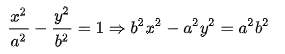
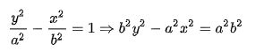
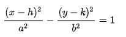
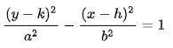
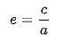

En geometría analítica, una hipérbola es el lugar geométrico de los puntos de un plano, tales que el valor absoluto de la diferencia de sus distancias a dos puntos fijos, llamados focos, es igual a la distancia entre los vértices, la cual es una constante positiva. Siendo esta constante menor a la distancia entre los focos.
Según la tradición, las secciones cónicas fueron descubiertas por el geómetra y matemático griego Menecmo (380 A. C.- 320 A. C.), en su estudio del problema de la duplicación del cubo, mediante el cual demostró la existencia de una solución usando el corte de una parábola con una hipérbola, lo cual es confirmado posteriormente por los también geómetras Proclo y Eratóstenes.
Sin embargo, el primero en usar el término hipérbola fue Apolonio de Perge en su tratado Cónicas, considerada la obra cumbre sobre el tema de las matemáticas griegas, y donde se desarrolla el estudio de las tangentes a las secciones cónicas.
   
